开源版本系统Gitlab使用¶
1. Gitlab信息¶
账号：研发组每人对应的拼音名
密码：qwer@123
账号登录： 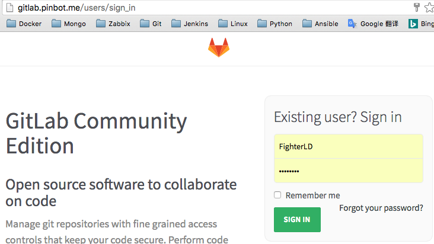
2. Gitlab使用指引¶
gitlab主界面： 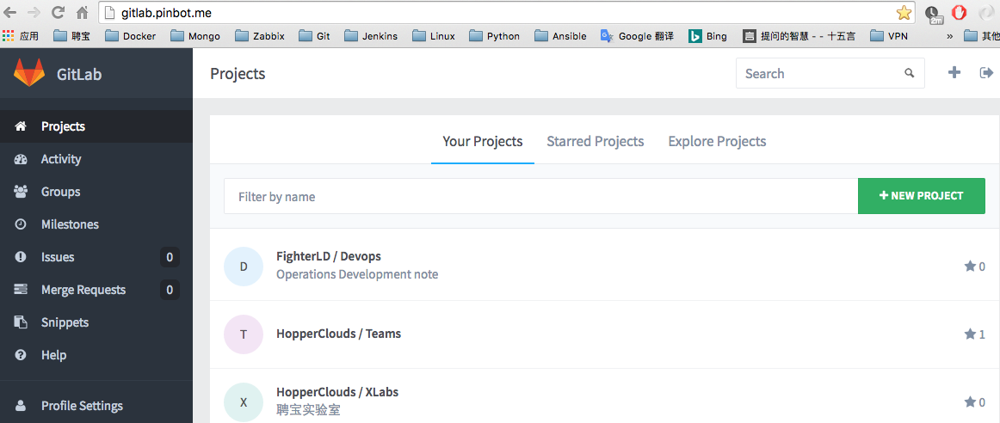
gitlab个人设置： 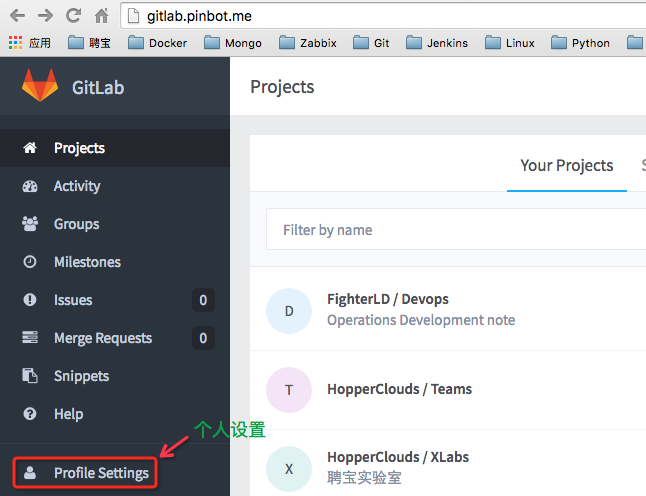
修改密码： 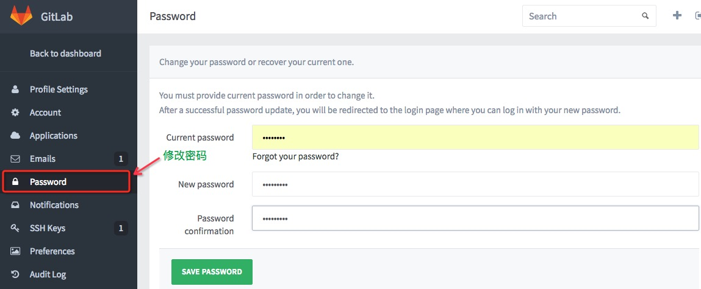
查看本机SSH-key： 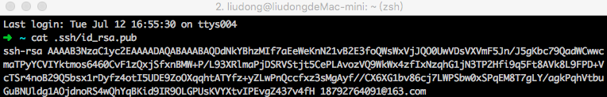
gitlab SSH-key 设置： 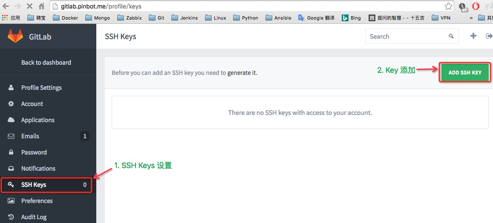
SSH-key添加： 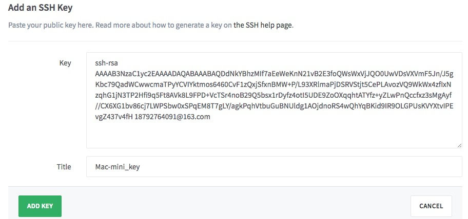
添加完成界面： 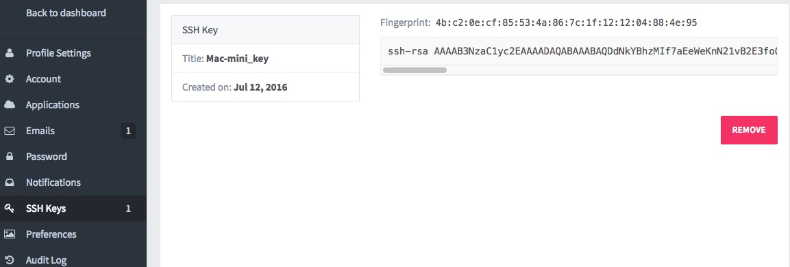
3. Gitlab新建项目¶
项目设置： 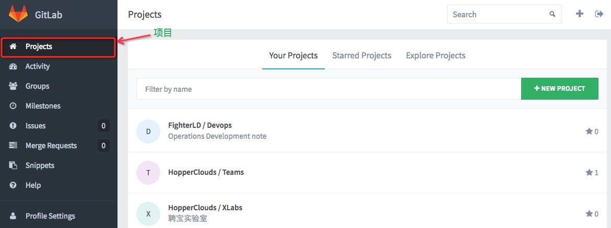
进入新建项目： 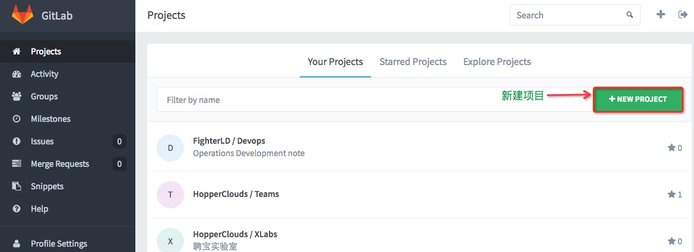
新建项目设置： 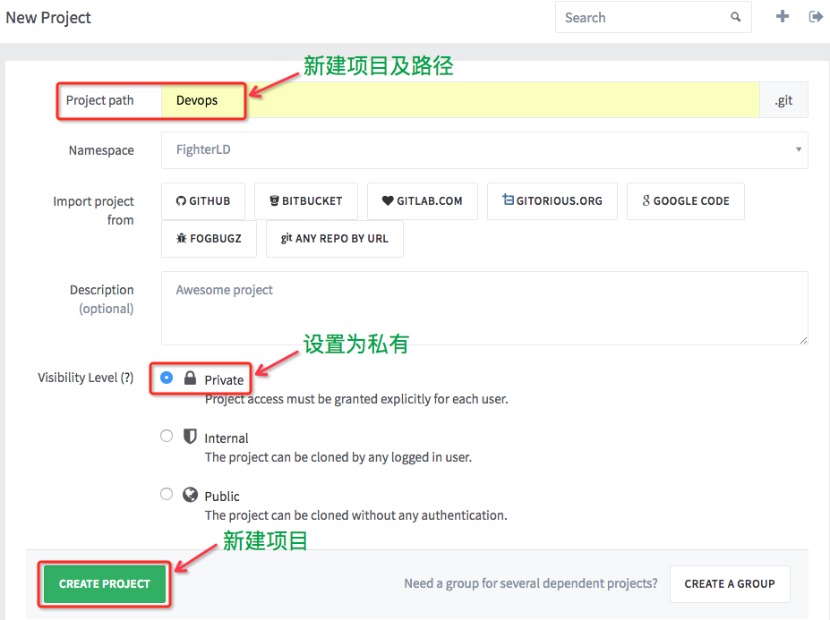
注：新建项目必须有内容才能Fork，例如：添加README.md
4. Gitlab Fork项目¶
选择需要fork的项目并进入： 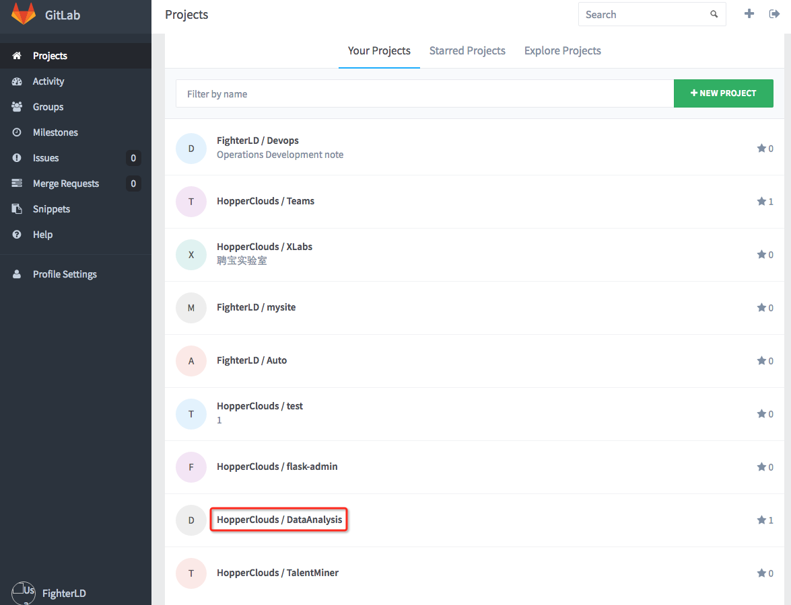
选择fork： 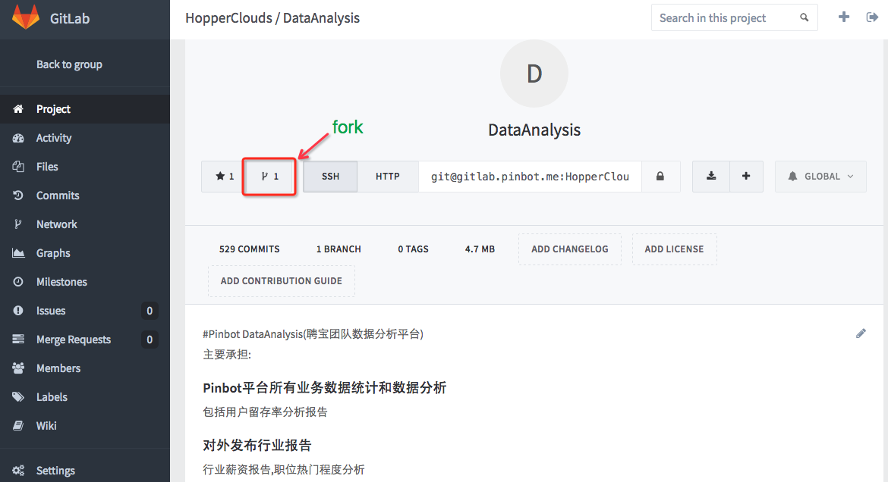
选择需要fork此项目的用户： 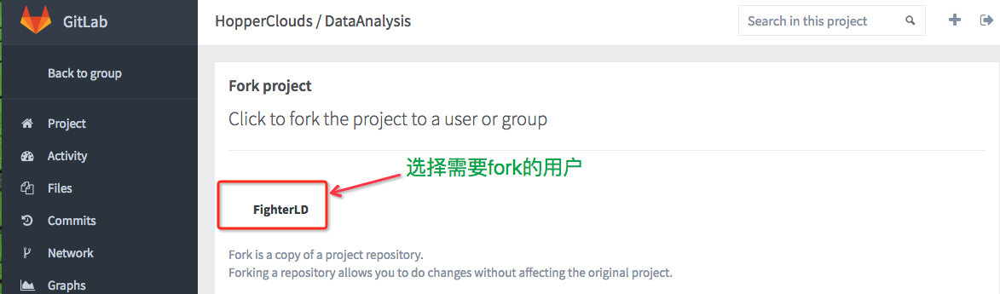
正在fork项目中： 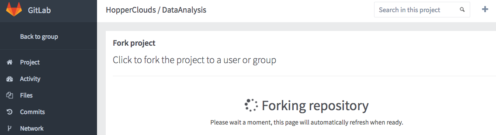
项目已经fork成功到用户中: 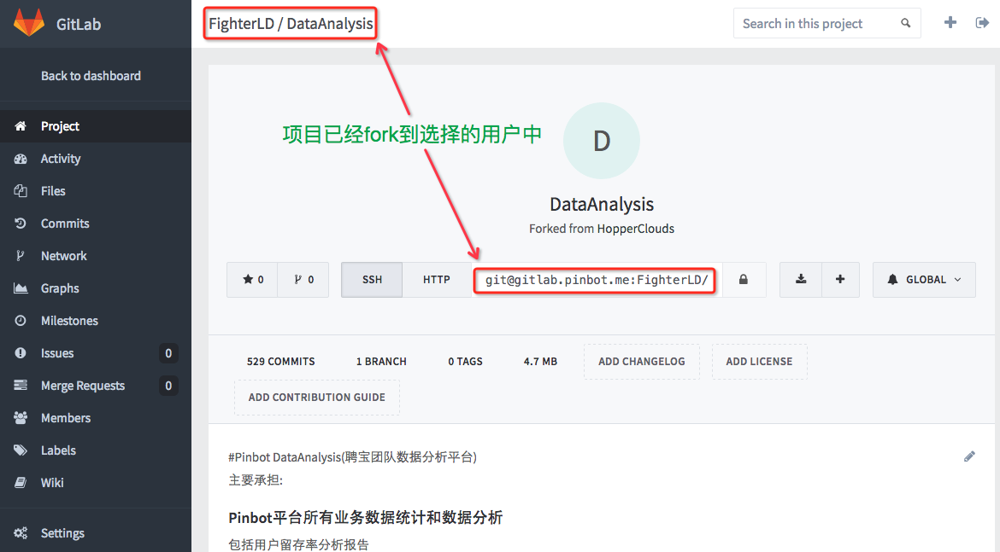
查看用户下的项目： 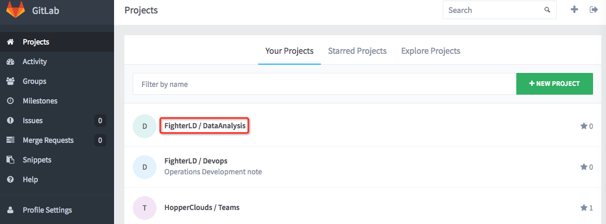
5. Clone项目到Linux机器¶
进入项目并复制git链接： 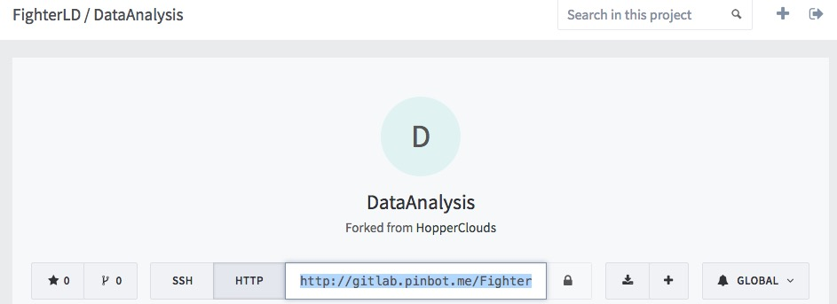
在Linux机器clone此项目: 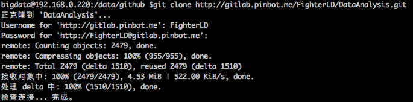
查看项目分支及状态： 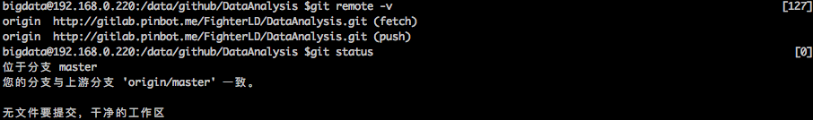
6. Linux机器中使用gitlab(和github命令一致)¶
查看git分支及状态： 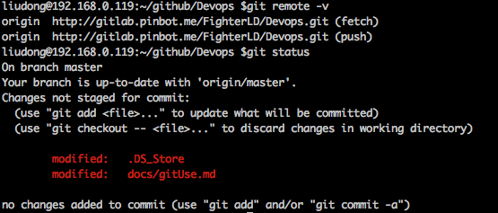
添加修改并提交： 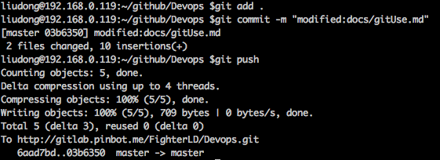